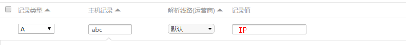

情人节快到啦，身为一个程序员肯定要写个东西给妹纸啊
顺便学习一下nodejs + express，然后部署的时候问题来了： 服务器上跑着自己的博客，然后丢到一个目录下如hrwhisper.me/abc/ 轻微强迫症又感觉受不了，于是部署有如下要求：
- 采用二级域名
abc.hrwhisper.me ，不要出现端口号啥的
- 强制https （本站都是https）
- 博客和该项目互不干扰，即能跑Nodejs和PHP ## 添加二级域名DNS
要弄二级域名，其实只需要把DNS解析一下即可。
添加A记录，以博主的是阿里云的DNS云解析为例，若二级域名为abc.hrwhisper.me，那么解析值填写如下（IP为你服务器的IP地址）

服务器安装nodejs
1
2
3
| cd /usr/local/src/
wget https://nodejs.org/dist/v6.9.5/node-v6.9.5-linux-x86.tar.gz
tar zxvf node-v6.9.5-linux-x86.tar.gz
|
然后将解压后的文件复制到/usr/local/node/6.9.5，这也是我们之后的nodejs的目录
1
2
| mkdir -p /usr/local/node/6.9.5
cp -r node-v6.9.5-linux-x86/* /usr/local/node/6.9.5
|
接下来设置环境变量。
vim /etc/profile在 export PATH USER LOGNAME MAIL HOSTNAME HISTSIZE HISTCONTROL 一行的上面添加如下内容:
#set for nodejs export NODE_HOME=**/usr/local/node/6.9.5** export PATH=$NODE_HOME/bin:$PATH
编译/etc/profile 使配置生效
验证是否安装配置成功
配置Nginx
nginx 先跑起PHP
由于本博客的已经跑在nginx了，并且是https，可以参考前几篇的方式：
值得注意的是，一般而言，二级域名的证书也要进行添加。
1
| sudo certbot certonly -a webroot --webroot-path=/var/www/html -d hrwhisper.me -d www.hrwhisper.me -d abc.hrwhisper.me
|
Nginx路径解析
如果nginx中有多个server块，那么请求匹配server_name的顺序如下：
- 首先匹配准确的server_name，如：
server_name abc.hrwhisper.me
- 然后匹配以
*通配符开始的server_name，如：server_name *.hrwhisper.me
- 然后匹配以
*通配符结束的server_name，如：server_name www.hrwhisper.*
- 最后匹配正则表达式形式的server_name，如：
server_name ~^(?<www>.+)\.hrwhisper\.me$
- 以上只有有一项匹配到以后就会停止搜索。
因此，我们二级域名abc.hrwhisper.me要能正确的被解析，那么可以采用准确匹配的方式。
因此，可以配置如下（采用Https）
（abc.hrwhisper.me的配置文件abc.conf）
1
2
3
4
5
6
7
8
9
10
11
12
13
14
15
16
17
18
19
20
21
22
23
24
25
26
27
28
| server {
listen 443;
server_name abc.hrwhisper.me;
ssl on;
ssl_certificate /etc/letsencrypt/live/hrwhisper.me/fullchain.pem;
ssl_certificate_key /etc/letsencrypt/live/hrwhisper.me/privkey.pem;
ssl_protocols TLSv1 TLSv1.1 TLSv1.2;
ssl_prefer_server_ciphers on;
ssl_ciphers ECDHE-RSA-AES128-GCM-SHA256:ECDHE-ECDSA-AES128-GCM-SHA256:ECDHE-RSA-AES256-GCM-SHA384:ECDHE-ECDSA-AES256-GCM-SHA384:ECDHE-RSA-AES128-SHA256:ECDHE-ECDSA-AES128-SHA256:ECDHE-RSA-AES128-SHA:ECDHE-ECDSA-AES128-SHA:ECDHE-RSA-AES256-SHA384:ECDHE-ECDSA-AES256-SHA384:ECDHE-RSA-AES256-SHA:ECDHE-ECDSA-AES256-SHA:!aNULL:!eNULL:!LOW:!3DES:!MD5:!EXP:!PSK:!SRP:!DSS;
add_header Strict-Transport-Security "max-age=31536000; includeSubdomains";
charset utf-8;
location / {
root /var/www/abc;
proxy_set_header X-Real-IP $remote_addr;
proxy_set_header X-Forwarded-For $proxy_add_x_forwarded_for;
proxy_set_header Host $http_host;
proxy_set_header X-NginX-Proxy true;
proxy_http_version 1.1;
proxy_set_header Upgrade $http_upgrade;
proxy_set_header Connection "upgrade";
proxy_pass http://localhost:3000;
proxy_redirect off;
}
}
|
配置www.conf为 wordpress的博客（www.hrwhisper.me）：
1
2
3
4
5
6
7
8
9
10
11
12
13
14
15
16
17
18
19
20
21
22
23
24
25
26
27
28
29
30
31
32
33
34
35
36
37
38
39
40
41
42
43
44
45
46
47
48
49
50
51
52
53
54
55
56
57
58
| server {
listen 443;
listen [::]:443 ssl ipv6only=on;
server_name hrwhisper.me www.hrwhisper.me;
ssl on;
ssl_certificate /etc/letsencrypt/live/hrwhisper.me/fullchain.pem;
ssl_certificate_key /etc/letsencrypt/live/hrwhisper.me/privkey.pem;
# ssl_session_timeout 5m;
ssl_protocols TLSv1 TLSv1.1 TLSv1.2;
ssl_prefer_server_ciphers on;
ssl_ciphers ECDHE-RSA-AES128-GCM-SHA256:ECDHE-ECDSA-AES128-GCM-SHA256:ECDHE-RSA-AES256-GCM-SHA384:ECDHE-ECDSA-AES256-GCM-SHA384:ECDHE-RSA-AES128-SHA256:ECDHE-ECDSA-AES128-SHA256:ECDHE-RSA-AES128-SHA:ECDHE-ECDSA-AES128-SHA:ECDHE-RSA-AES256-SHA384:ECDHE-ECDSA-AES256-SHA384:ECDHE-RSA-AES256-SHA:ECDHE-ECDSA-AES256-SHA:!aNULL:!eNULL:!LOW:!3DES:!MD5:!EXP:!PSK:!SRP:!DSS;
add_header Strict-Transport-Security "max-age=31536000; includeSubdomains";
# enable HSTS including subdomains
add_header Strict-Transport-Security "max-age=31536000; includeSubdomains";
charset utf-8;
access_log /var/log/nginx/access.log main;
location / {
root /var/www/html;
index index.php index.html index.htm;
if (-f $request_filename/index.html){
rewrite (.*) $1/index.html break;
}
if (-f $request_filename/index.php){
rewrite (.*) $1/index.php;
}
if (!-f $request_filename){
rewrite (.*) /index.php;
}
}
error_page 404 /404.html;
location = /404.html {
root /usr/share/nginx/html;
}
error_page 500 502 503 504 /50x.html;
location = /50x.html {
root /usr/share/nginx/html;
}
# pass the PHP scripts to FastCGI server listening on 127.0.0.1:9000
#
location ~ \.php$ {
root /var/www/html;
fastcgi_pass 127.0.0.1:9000;
fastcgi_index index.php;
fastcgi_param SCRIPT_FILENAME $document_root$fastcgi_script_name;
include fastcgi_params;
}
}
|
强制Https
上面只配置了Https,我们将http版本301重定向到https的
配置/etc/nginx/conf.d/default.conf如下：
- 监听80端口
- /.well-known/acme-challenge/ 不强制https
1
2
3
4
5
6
7
8
9
10
11
12
13
| server {
listen 80;
server_name *.hrwhisper.me;
location ^~ /.well-known/acme-challenge/ {
default_type "text/plain";
root /var/www/html;
}
location / {
return 301 https://$host$request_uri;
}
}
|
然后测试配置文件
没有错的话就
小结
其实用nginx实现上面的要求并不难，特别是一个子域名对应一个配置文件的话。
其实理论上应该是还能用泛域名解析的方式，这样能精简配置文件，但难点在于，我们并不是两个app都是php or nodejs，如果用if判断效率不如两个server_name的方式。